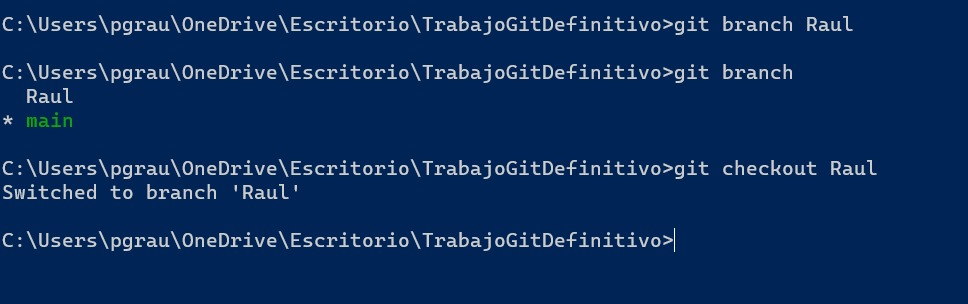

Parte 2
Creación de ramas. Recuerda que en la rama master/main sólo debería existir la versión acabada del producto.
Para la creación de ramas se usa el comando "git branch" seguido del nombre de la rama nueva
que quieras crear. Para moverse entre ramas se utiliza el comando "git checkout" seguido del nombre de la rama
hacia la que quieras viajar

Proceso de merge entre ramas.
Para fusionar dos ramas habría que asegurarse en que rama estamos y con que rama la queremos
fusionar. Para ello se usa el comando "git merge" seguido del nombre de la rama con la cual que queremos
fusionar.
Diferencias entre un pull y un fetch.
Son dos comandos diferentes que se utilizan para actualizar un repositorio local respecto a los cambios de un repositorio remoto. Se distinguen en que "git pull" combiina los cambios recientes con los cambios del repositorio local, mientras que "git fetch" descarga los cambios y los almacena en una rama diferente.
¿Cómo podríamos volver a una versión anterior del proyecto?
Para volver a una versión anterior usaríamos el comando "git reset". Esto te permite volver a
un commit anterior y eliminar los cambios realizados a partir de ese commit
Para volver a una versión anterior sin borrar los cambios que se han hecho a partir de esa versión usaríamos el
comando "git revert".
¿Podemos añadir seguridad de alguna forma a nuestro repositorio remoto?
Sí que podemos añadir una seguridad extra al repositorio. La manera más efectiva sería emplear claves SSH, son una forma de autenticar la conexión con un repositorio remoto.